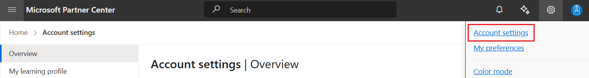
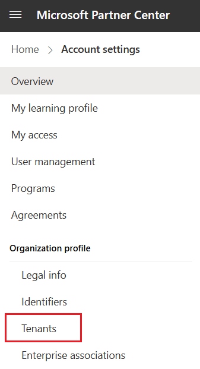
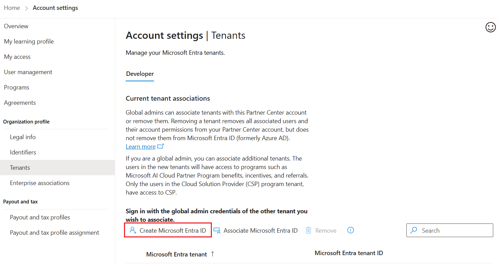
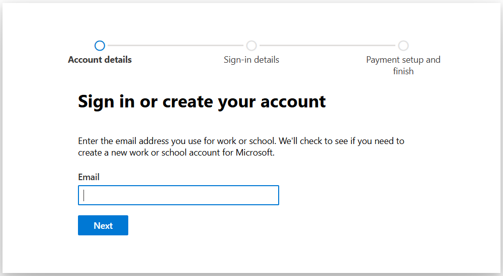
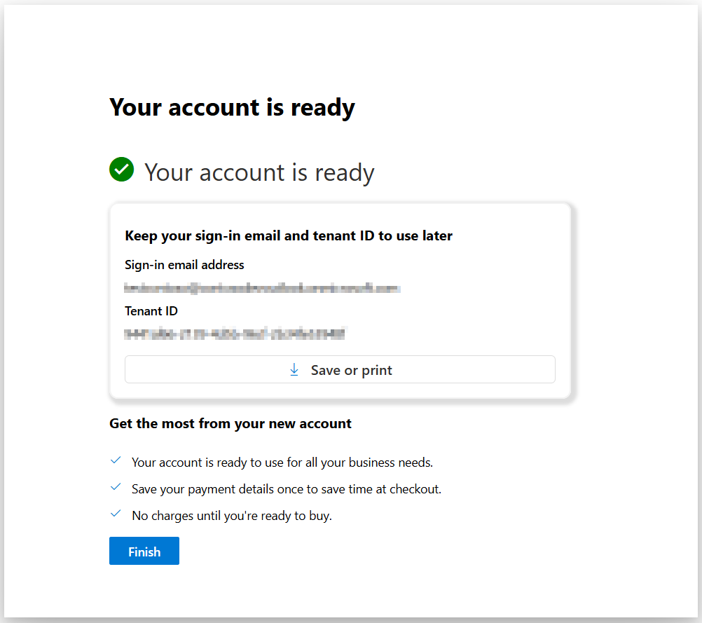

Create a new Microsoft Entra ID tenant in Partner Center
If you need to set up a new Microsoft Entra ID to link with your Partner Center account, follow these steps.
From Partner Center, select the gear icon (near the upper right corner of the dashboard) and then select Account settings. In the Settings menu, select Tenants.


From Tenants, select Create Microsoft Entra ID.

Enter the Microsoft Entra ID credentials that will be used to create a new tenant.

Enter all required information as prompted by the tenant creation wizard.
Once the tenant is created, a confirmation dialog will appear.

Note
Any user who has the Manager role for a Partner Center account can associate Microsoft Entra ID tenants with the account.
You can associate multiple Microsoft Entra ID tenants to a single Partner Center account. To associate a new tenant, select Associate another Microsoft Entra ID tenant, then follow the steps from associate existing Microsoft Entra ID with partner center. Note that you will be prompted for your credentials in the Microsoft Entra ID tenant that you want to associate.